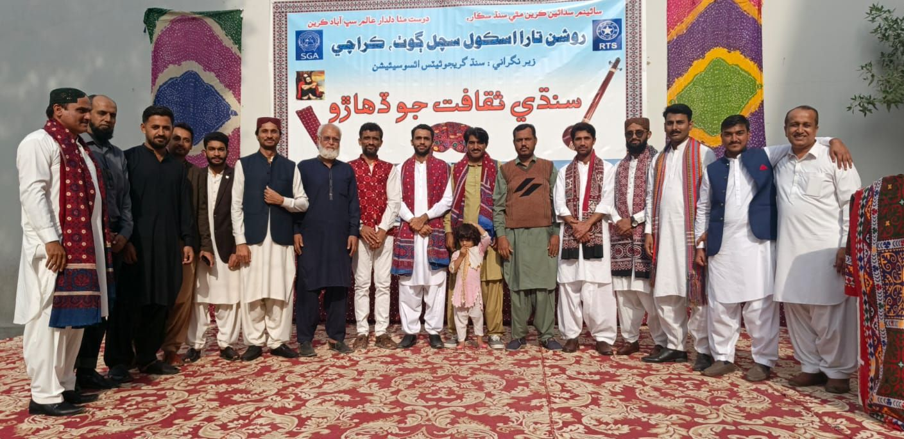
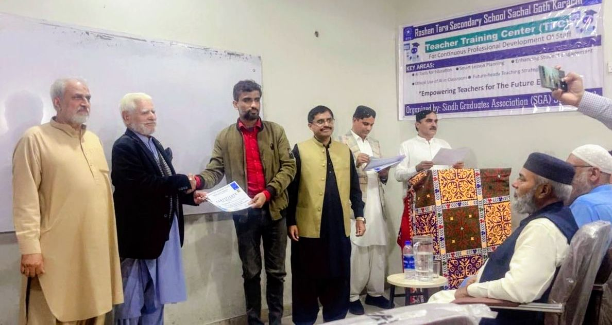
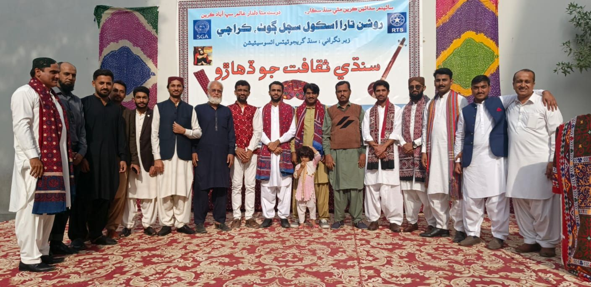
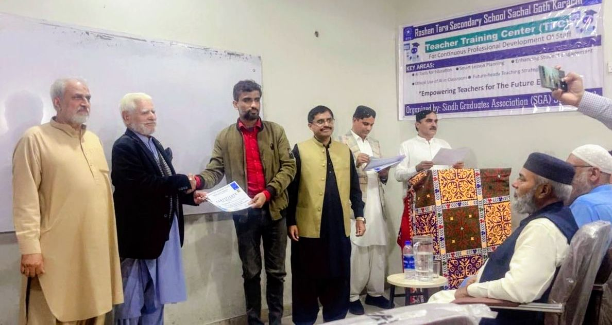

Sindhi Culture Day – December 2025
Roshan Tara Secondary School proudly celebrated Sindhi Culture Day to promote Sindh’s rich traditions, language, and cultural heritage.

Sachal Goth, Karachi
Welcome to Roshan Tara Secondary School. Our mission is to provide quality education with discipline, moral values, and modern learning skills to prepare our students for future success.
Admissions are open from Playgroup to Secondary Classes.
Location: Sachal Goth, Karachi
Contact: 03XX-XXXXXXX
An AI awareness session was organized to introduce students to modern technology and future career opportunities.
A professional training program was conducted to enhance teaching skills and classroom management strategies.
Roshan Tara Secondary School proudly celebrated Sindhi Culture Day to promote Sindh’s rich traditions, language, and cultural heritage.
 


